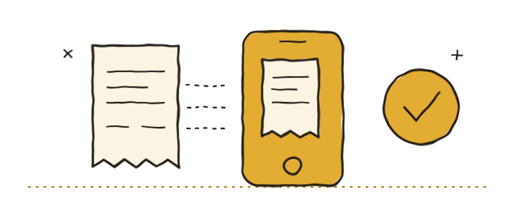

Is a photo of a receipt proof of purchase.

The kettle stops working after fourteen months and the paper receipt is long gone. In Australia that does not end the matter. What you need is proof of purchase, and the paper receipt is only one kind.
- A shop can ask for proof of purchase before a refund, repair or replacement.
- Proof does not have to be the original receipt. A photo or copy counts.
- A card statement, order email or lay-by agreement can also work.
- The clearer the proof, the quicker the claim.
What counts as proof of purchase
The ACCC lists several things that can show you bought a product from a business, including:
- a tax invoice or receipt, or a copy or photo of one
- a credit or debit card statement
- a lay-by agreement
- a receipt or confirmation number from a phone or online order
- a warranty card showing the supplier, the date and the amount
See the ACCC's page on receipts and proof of purchase for the current list.
Why the receipt is still the best proof
A card statement shows the shop, the date and the total. It does not show which product you bought. If you bought three things that day, the receipt is what ties the faulty one to the purchase. A photo of the receipt gives you the same detail as the paper, without the fading.
After the manufacturer's warranty ends
Under the Australian Consumer Law, products come with consumer guarantees that sit beside any manufacturer's warranty. They can still apply after the warranty period has ended, depending on the product and what a reasonable person would expect of it. Either way, the first thing you will be asked for is proof of purchase, so it is worth keeping for the life of the product, not only for the warranty.
Make a photo that holds up
- Take it the day you buy, before the print fades.
- Lay the receipt flat and fit the whole thing in frame.
- Check the shop name, date, product line and total are readable.
- Store it with the product name, so you can find it in two years.
Doing this with Kepto
Kepto is a receipt scanner and warranty tracker. Scan the receipt, and Kepto reads the shop, date and total on your phone, files it under the product, and reminds you before the warranty ends. When something breaks you search the product name and the receipt is there.
Kepto is free for up to 25 receipts on iPhone and iPad and Android. There is no account, and your receipts stay on your phone. See how Kepto works.
This page is general information, not tax or legal advice. Rules change, so check the official source linked above for your own situation.